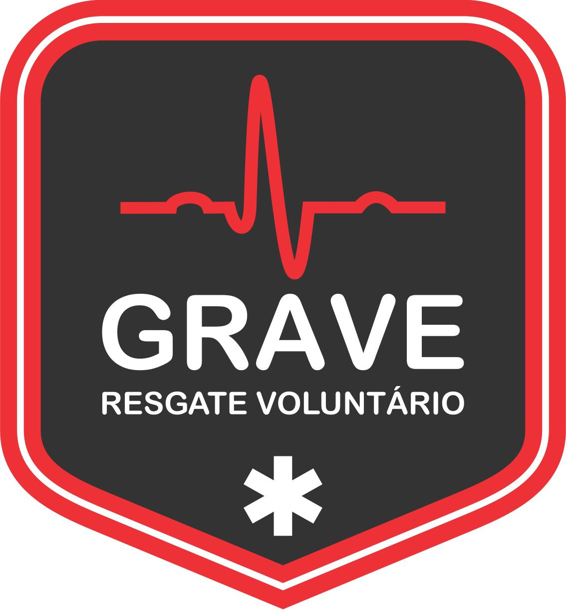
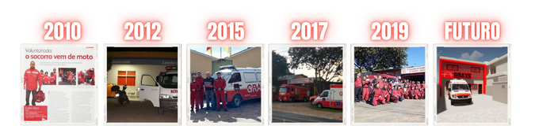

<!DOCTYPE html>
<html lang="en">
<head>
    <meta charset="UTF-8">
    <meta name="viewport" content="width=device-width, initial-scale=1.0">
    <title>GRAVE Resgate</title>
    <link rel="shortcut icon" href="logonormal.jpeg" type="image/x-icon">
    <link rel="stylesheet" href="Estilo/style.css">
</head>
<body>
    <header>
            <!--
        <section class="imagem" id="fundo-header-grande">
            <h1>GRAVE</h1>
            <p>
                Grupo de Resgate e Apoio Voluntário de Emeregência
            </p>
        </section>
        <nav>
            <a href="#">Home</a>
            <a href="#">História</a>
            <a href="#">Reconhecimento</a>
            <a href="#">Parceiros</a>
        </nav>
    </header>
    <main>
        <article>
            <a href="ADICIONAR LINK WHATSAPP" class="whatsapp-float" target="_blank">
                
            </a>
            <h1>
                Apresentação
            </h1>
            <p>
                O Grupo De Resgate E Apoio Voluntário De Emergência (GRAVE) é uma organização não governamental (ONG) sem fins lucrativos, reconhecida como utilidade pública na cidade de Cachoeirinha (RS), com o objetivo de auxiliar os órgãos públicos de emergência no atendimento pré-hospitalar, de forma totalmente voluntária.

                O trabalho da instituição se mantém através de doações da comunidade, de apoiadores e de voluntários.
                
                Atualmente, o GRAVE conta com 160 voluntários ativos que se revezam em plantões de doze horas para atender a comunidade e dispõe de duas ambulâncias equipadas para realizar o atendimento no município de Cachoeirinha e Gravataí (RS), iniciando às 20h de quinta-feira e finalizando às 8h de segunda-feira.
                
                O GRAVE participa ativamente ações sociais, campanhas de prevenções de acidentes, doações de sangue, doações de agasalhos e alimentos, promove e participa de palestras, workshops, remoções e cursos. 
                
            </p>
            <h2>
                História 
            </h2>
            <p>
                No ano de 2009, começou a ser idealizado o projeto da instituição, e em 23 de julho 2010 o GRAVE foi fundado por seis amigos da região metropolitana de Porto Alegre/RS. Iniciaram sem recursos e com todos os obstáculos possíveis, encontraram forças em pessoas que se disponibilizaram de forma voluntária e abraçaram a causa. 

                A primeira base operacional do GRAVE foi situada na cidade de Glorinha (RS), em um local cedido pela prefeitura, junto disso, foi recebido a doação de um veículo da prefeitura que estava desativado por problemas mecânicos. 
                Após 14 meses de luta, em busca de recursos e doações para o reparo do veículo arrecadado, foi somente em fevereiro de 2012 que o GRAVE realizou seu primeiro plantão. Ainda sem apoiadores para combustíveis, alimentações, uniformes... 
                <picture>
                    <source media="(max-width: 600px)" srcset="imagens/GRAVE-Apresentação-pq.png">
                
                </picture>
                <p>
                Com a ajuda de empresas locais e da comunidade, foi reparado e equipado o veículo doado pela prefeitura, se tornando a primeira unidade de resgate do GRAVE, nomeada UR-G01.

                Em dezembro de 2016 foi solicitado a desocupação do local que estava sendo utilizado como base operacional, consequentemente a equipe ficou sem estruturas para seguir o trabalho. Na época, já contavam com duas ambulâncias e 35 voluntários, mas foi preciso ficar o período de cinco meses sem operar, devido á falta de uma base operacional. 

                Em maio de 2017, o GRAVE fecha parceria com o Corpo de Bombeiros Militar de Cachoeirinha (RS) e é convidado a utilizar o quartel como base operacional, um fato pioneiro onde uma associação civil com comando próprio, utiliza um quartel militar como sede operacional.

                Em dezembro de 2019, a instituição recebe do prefeito de Cachoeirinha/RS, a cedência de uma área para a construção de uma sede operacional, e no mesmo dia o GRAVE entrega para os voluntários a unidade de resgate UR-G03, que foi adquirida com recursos próprios.

                Atualmente a construção da nova base operacional já está com 80% concluída, também está sendo realizada com recursos próprios, e recursos adquiridos por meios de pedágios solidários, eventos, doações da comunidade e apoiadores. 

                A administração da instituição é feita através de uma diretoria, no qual foi eleita pelos voluntários ativos do GRAVE. A diretoria é composta atualmente pelo presidente Michel Elias e a vice-presidente Liane Lima.

                Existe dentro da diretoria setores de administração e voluntários responsáveis por cada função, são os setores de recursos humanos, tesouraria, secretaria, patrimonial e eventos. 
                
            </p>
            <h2>
                Reconhecimento
            </h2>
            <p>
                m 2012, a instituição já era observada por autoridades locais e recebeu uma homenagem na câmara municipal de vereadores no município de Glorinha (RS), pelos seus comprometimentos nos atendimentos a comunidade.

                Em fevereiro de 2015, recebeu uma moção de parabenização na câmara de Vereadores de Gravataí (RS) pelos serviços prestados ao município em favor da população gravataiense e região.
                
                Em dezembro de 2015, foi reconhecido formalmente como organização social no município de Glorinha (RS).
                
                No dia 24 de outubro de 2017, foi reconhecido pelo decreto 6326 como instituição de utilidade pública na cidade de Cachoeirinha (RS).
                
                Em fevereiro de 2017, o GRAVE realizou uma parceria com a Universidade Luterana do Brasil (ULBRA) através da Liga Acadêmica de Enfermagem em Urgência e Emergência (LEURGE). A partir disso o curso de APH que era promovido pelo GRAVE, passa a ser Curso De APH GRAVE/ULBRA, sendo certificado pela Universidade e reconhecido como um curso de extensão universitária.
                
                Em novembro de 2017, foi recebido do legislativo municipal de Cachoeirinha/RS uma moção de congratulação pelos serviços prestados.
                Em setembro de 2018, o presidente do GRAVE recebe do legislativo municipal de Gravataí/RS uma medalha da defesa civil pelos relevantes serviços de salvamento no município.
                
            </p>
            <picture>
                <source media="(max-width: 600px)" srcset="imagens/irina-blok-pq.jpg">
                
            </picture>
            <p>
                
                A ideia principal da Irina era representar tudo graficamente com poucos traços e de forma mais chapada. O desenho também deveria gerar identificação rápida com quem o olha. Surgiu então o <strong>Bugdroid</strong>, o novo mascote do Android.
                
            </p>
            
            
            <p>
                A principal inspiração para os traços do novo <strong>Bugdroid</strong> veio daqueles bonequinhos que ilustram portas de banheiro para indicar o gênero de cada porta. Conta a lenda que a artista estava criando em sua mesa no escritório do <strong>Google</strong> e olhou para o lado dos banheiros e a identificação foi imediata: simples, limpo, objetivo.
            </p>
            
            <div class="video">
                <iframe width="560" height="315" src="https://www.youtube.com/embed/wcrB7Ho5UaM?si=x6Xd6OM-yZvQOLp4" title="YouTube video player" frameborder="0" allow="accelerometer; autoplay; clipboard-write; encrypted-media; gyroscope; picture-in-picture; web-share" allowfullscreen></iframe>
            </div>

            <aside>
                <h3>
                    Quer aprender mais?
                </h3>                
                <p>
                    Outro assunto curioso em relação ao Android é que cada versão sempre foi nomeada em homenagem a um doce, em ordem alfabética a partir da versão 1.5 até a 9.0.
                </p>                
                <ul>
                    <li>
                        <abbr title="Bolo de Copo">1.5 - Cupcake</abbr>
                    </li>
                    <li>  
                        <abbr title="Rosquinha">1.6 - Donut</abbr>
                    </li>
                    <li>
                        <abbr title="Bomba">3.0 - Eclair</abbr>
                    </li>
                    <li>
                        <abbr title="Iogurte Congelado">2.2 - Froyo</abbr>
                    </li>
                    <li>
                        <abbr title="Biscoito de Gengibre">2.3 - Gingerbread</abbr>
                    </li>
                    <li>
                        <abbr title="Favo de Mel">3.0 - Honeycomb</abbr>
                    </li>
                    <li>
                        <abbr title="Sanduíche de Sorvete">4.0 - Ice Cream Sandwich</abbr>
                    </li>
                    <li>
                        <abbr title="Jujuba">4.1 - Jelly Bean</abbr>
                    </li>
                    <li>
                        <abbr title="KitKat">4.4 - KitKat</abbr>
                    </li>
                    <li>
                        <abbr title="Pirulito">5.0 - Lolipop</abbr>
                    </li>
                    <li>
                        <abbr title="Marshmallow">6.0 - Marshmallow</abbr>
                    </li>
                    <li>
                        <abbr title="Trrone">7.0 - Nougat</abbr>
                    </li>
                    <li>
                        <abbr title="Oreo">8.0 - Oreo</abbr>
                    </li>
                    <li>
                        <abbr title="Torta">9.0 - Pie</abbr>
                    </li>
                </ul>                
                <p>
                    Infelizmente, o <strong>Android Q</strong> não existiu, pois o Google resolveu pôr fim a essa divertida prática e começou a usar numerações, o que deu origem ao <strong>Android 10</strong>.
                </p>                
                <p>
                    Acesse aqui o site 
                    <a href="https://www.android.com/intl/pt-BR_br/history/">Android History</a> 
                    para conhecer a sequência das versões "adocicadas" e o que cada uma trouxe para o sistema Android.
                </p>
            </aside>    
                <p>
                    Então é isso! Espero que você tenha gostado do nosso artigo com essa curiosidade sobre o sistema Android e seu simpático mascote.
                </p>
        </article>
    </main>        
    <footer>
        Site criado por 
        <a href="https://github.com/NogueiraCleiton" target="_blank">Cleiton Nogueira</a>
         para o 
         <a href="https://cursoemvideo.com" target="_blank">CursoemVideo</a>.
    </footer>
</body>
</html>